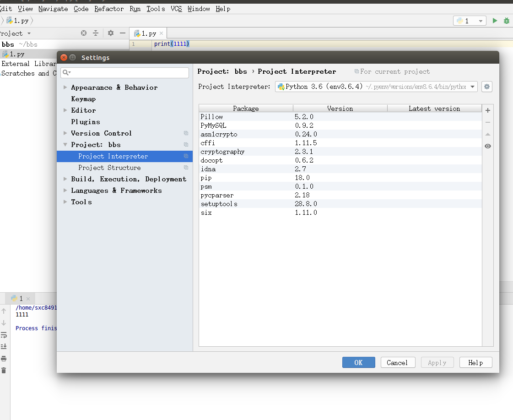
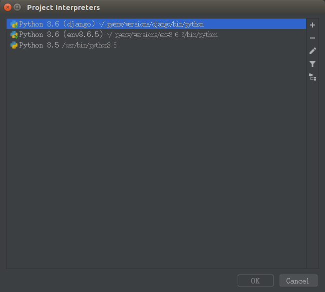
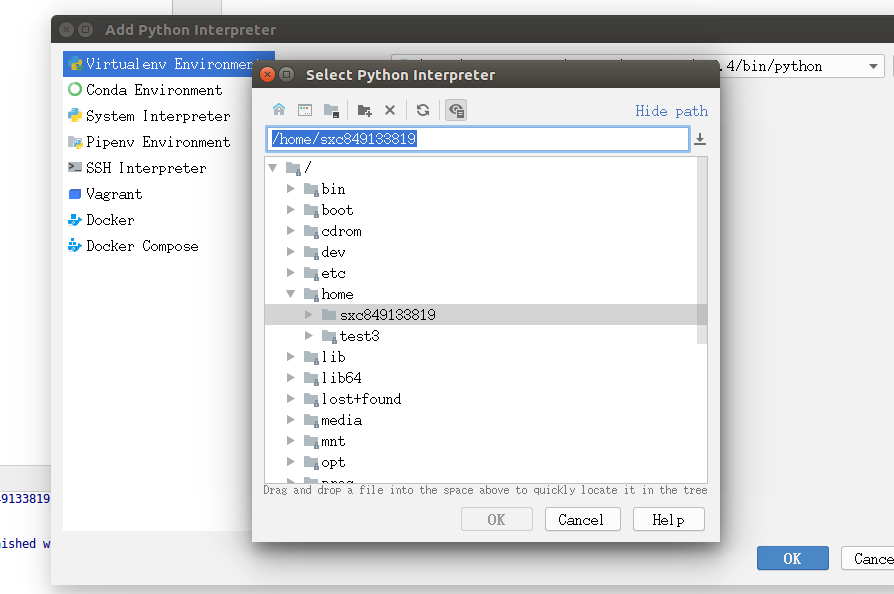
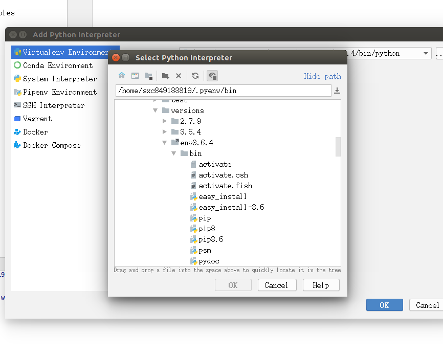
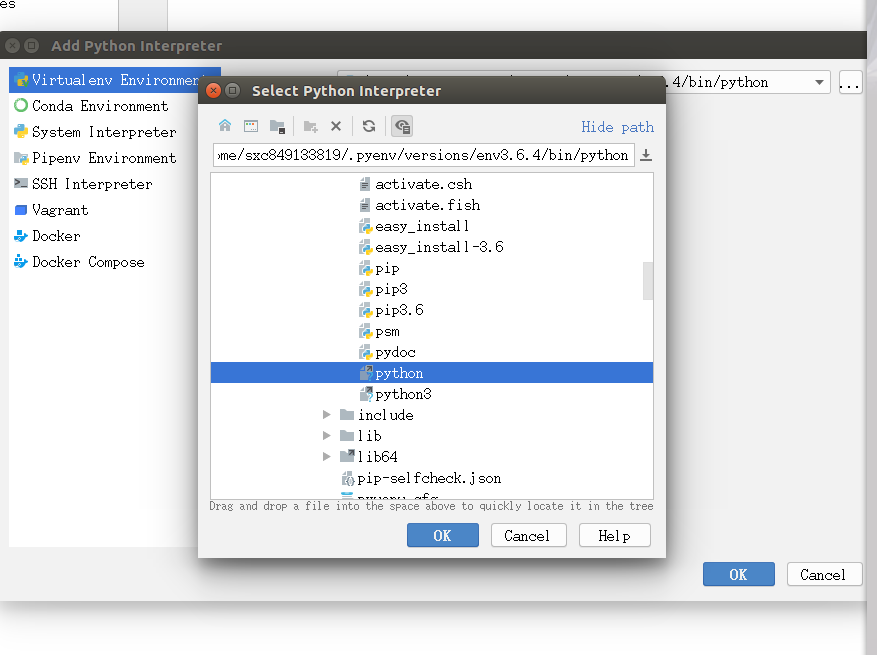

一、开机启动
可以设置开机启动有两个地方：第一，在/etc/init.d目录下，可以将服务放到这个目录下。第二是在/etc/init.d下的rc.local，可以将需要开机启动的程序写入这个文件。可以使用sysv-rc-conf命令进行设置和查看开机启动服务。
在/etc/init.d/下新建一个脚本test，格式如下：
1
2
3
4#!/bin/bash
#要执行的命令
exit 0增加脚本可执行权限
1 | sudo chmod +x test |
设置开机启动
1
2sudo update-rc.d test defaults
#90是优先级，越大优先级越低，越晚执行使用sysv-rc-conf命令设置运行级别
1
2
3
4
5
6
7
sudo apt-get install sysv-rc-conf
sudo update-rc.d -f 脚本名 remove
二、防火墙
UFW或Uncomplicated Firewall是iptables的接口，旨在简化配置防火墙的过程。UFW默认安装在Ubuntu上。如果没有安装，你可以使用sudo apt-get install ufw 。
ufw常见操作
1
2
3
4
5sudo ufw status #查看状态和规则
sudo ufw disable #禁用
sudo ufw enable #启用
sudo ufw reset #重置
sudo ufw status numbered #显示规则编号设置默认策略
如果您刚刚开始使用防火墙，则首先要定义的规则是您的默认策略。这些规则控制如何处理未明确匹配任何其他规则的流量。
1
2sudo ufw default deny incoming #拒绝所有传入连接
sudo ufw default allow outgoing #允许所有传出连接开启或禁用指定连接
1
2
3
4
5
6
7
8
9
10
11
12
13
14
15
16
17
18
19
20
21
22
23
24
25
26
27
28
29#允许连接
sudo ufw allow 端口/服务
#允许ssh远程连接
sudo ufw allow ssh #或者sudo ufw allow 22/tcp
#允许未加密的web访问
sudo ufw allow http #或sudo ufw allow 80
#允许加密的web访问
sudo ufw allow https #或sudo ufw allow 443
#允许ftp访问
sudo ufw allow ftp #或sudo ufw allow 21/tcp
#允许远程mysql访问
sudo ufw allow 3306
#允许特定范围的端口
sudo ufw allow 6000:6007/tcp #允许使用端口6000 - 6007 X11连接
#允许特定ip地址
sudo ufw allow from 15.15.15.51
#允许特定子网
sudo ufw allow from 15.15.15.0/24 #允许所有的IP地址范围从15.15.15.1到15.15.15.254
#拒绝连接
sudo ufw deny http
sudo ufw deny from 15.15.15.51删除规则
1
2
3
4
5
6sudo ufw status numbered #先查看编号
sudo ufw delete 2 #再按编号删除
#按实际规则
sudo ufw delete allow http
sudo ufw delete allow 80
三、nginx环境搭建
1 | 安装nginx |
#站点的根目录
root /var/www/html/www.blog.com;
# Add index.php to the list if you are using PHP
#网站默认首页打开顺序
index index.html index.htm;
#站点名称，可以有多个名称，中间用空格隔开
server_name www.blog.com blog.com;
1 |
|
1 | 192.168.48.3 www.blog.com` |
四、下载
wget wget命令用来从指定的URL下载文件。wget非常稳定，它在带宽很窄的情况下和不稳定网络中有很强的适应性，如果是由于网络的原因下载失败，wget会不断的尝试，直到整个文件下载完毕。如果是服务器打断下载过程，它会再次联到服务器上从停止的地方继续下载。这对从那些限定了链接时间的服务器上下载大文件非常有用。
1
2
3
4
5#使用wget -c重新启动下载中断的文件，对于我们下载大文件时突然由于网络等原因中断非常有帮助，我们可以继续接着下载而不是重新下载一个文件。需要继续中断的下载时可以使用-c参数。
sudo wget -c http://mirrors.sohu.com/python/3.6.4/Python-3.6.4.tar.xz
#-P 将下载文件存到指定目录
sudo wget -c http://mirrors.sohu.com/python/3.6.4/Python-3.6.4.tar.xz -P ~/ #下载保存到家目录curl
curl命令是一个利用URL规则在命令行下工作的文件传输工具。它支持文件的上传和下载，所以是综合传输工具，但按传统，习惯称curl为下载工具。
1
curl -O http://mirrors.sohu.com/python/3.6.4/Python-3.6.4.tar.xz
五、python开发环境配置
Python 2和Python 3之间存在着较大的差异，并且，由于各种原因导致了Python 2和Python 3的长期共存。在实际工作过程中，我们可能会同时用到Python 2和Python 3，因此，也需要经常在Python 2和Python 3之间进行来回切换。这就需要对python的版本进行管理，除此之外还需要对不同的软件包进行管理。大部分情况下，对于开源的库我们使用最新版本即可。但是，有时候可能需要对相同的Python版本，在不同的项目中使用不同版本的软件包。
在这里，我们要使用两个工具：pyenv和virtualenv。前者用于管理不同的Python版本，后者用于管理不同的工作环境。有了这两个工具，Python相关的版本问题将不再是问题。
5.1 pyenv
pyenv是一个Python版本管理工具，它能够进行全局的Python版本切换，也可以为单个项目提供对应的Python版本。使用pyenv以后，可以在服务器上安装多个不同的Python版本，也可以安装不同的Python实现。不同Python版本之间的切换也非常简单。pyenv官方地址https://github.com/pyenv/pyenv-installer
- 安装pyenv
1 | #1 安装pyenv，在命令行下键入： |
使用pyenv
1
2
3
4
5
6
7
8
9
10
11
12
13
14
15
16
17
18
19
20
21
22
23
24
25
26
27
28
29#1.查看pyenv当前支持哪些Python版本
python@ubuntu:~$ pyenv install --list
Available versions:
2.1.3
2.2.3
2.3.7
...
#2.列出pyenv中所有可用的python版本
python@ubuntu:~$ pyenv versions
system
3.5.4
* 3.6.4 (set by /home/python/.pyenv/version) # *表示当前使用的3.6.4版本
#3.选择指定的python版本
python@ubuntu:~$ pyenv global 3.5.4 #设置指定的版本
python@ubuntu:~$ python
Python 3.5.4 (default, Mar 29 2018, 11:02:03) #已经切换到了3.5.4
[GCC 5.4.0 20160609] on linux
Type "help", "copyright", "credits" or "license" for more information.
>>>
切换Python版本以后，与版本相关的依赖也会一起切换。因此，我们不用担心不同的版本在系统中是否会相互干扰。
#4. 删除指定python版本
python@ubuntu:~$ pyenv uninstall 3.5.4
pyenv: remove /home/python/.pyenv/versions/3.5.4? y
python@ubuntu:~$ pyenv versions
system
* 3.6.4 (set by /home/python/.pyenv/version)安装python
1
2
3
4
5
6
7
8
9
10
11
12
13
14
15
16
17
18
19
20
21
22
231.在安装python之前，我们必须要安装python所需要的依赖包，这个必须要安装，安装会失败的：
sudo apt-get install libc6-dev gcc
sudo apt-get install -y make build-essential libssl-dev zlib1g-dev libbz2-dev libreadline-dev libsqlite3-dev wget curl llvm
2. 安装python
pyenv install 3.6.4 -v #-v 以日志模式显示安装过程
因为pyenv会自动到github上下载，速度超慢，所以一般会选择使用curl或者wget下载到~/.pyenv/cache下，然后再用pyenv安装，下面是可选的安装模式
cd ~/.pyenv
sudo mkdir cache
wget -c http://mirrors.sohu.com/python/3.6.4/Python-3.6.4.tar.xz -P ~/.pyenv/cache/
pyenv install 3.6.4 -v
3.更新pyenv数据库
pyenv rehash
4.列出所安装的python版本
pyenv versions
5.切换python版本
pyenv global 3.6.4
6.验证版本
python注意：
- 使用pyenv管理python，必须是用pyenv安装的python才行，系统以前有的，需要重新用pyenv安装
- 使用pip安装第三方模块时会安装到~/.pyenv/versions/xxx下，不会和系统模块发生冲突；
- 使用pip安装模块后，可能需要执行pyenv rehash更新数据库。
5.2 virtualenv
virtualenv本身是一个独立的项目，用以隔离不同项目的工作环境。例如，项目A和项目B都是使用Python 2.7.13，但是，项目A需要使用Flask 0.8版本，项目B需要使用Flask 0.9版本。我们只要组合pyenv和virtualenv这两个工具，就能够构造Python和第三方库的任意版本组合，拥有了很好的灵活性，也避免了项目之间的相互干扰。
virtualenv本身是一个独立的工具，用户可以不使用pyenv单独使用virtualenv。但是，如果你使用了pyenv，就需要安装pyenv-virtualenv插件而不是virtualenv软件来使用virtualenv的功能。
项目主页：https://github.com/yyuu/pyenv-virtualenv
安装virtualenv（可选）
如果是python3以上，安装完pyth就已经安装了virtualenv，就不用安装了
1
2
3
4
5#安装
$ pip install virtualenv
#或者，如果提示版本不匹配，可以使用--upgrade参数
$ sudo pip install --upgrade virtualenv使用virtualenv创建项目的虚拟环境
一个项目创建一个virtualenv的虚拟环境，在这个环境中，可以用pip安装项目所需的库，不会影响其他项目。切记一个项目一个虚拟环境，否则可能会发生莫名的错误。
1 | #1.首先创建项目目录 |
1、安装 virtualenvwrapper
1 | pip3 install virtualenv |
2、新建虚拟环境文件夹
1 | mkdir ~/PyEnv |
3、设置环境变量
在使用virtualenvwrapper之前，要运行virtualenvwrapper.sh文件，需要设置环境变量， vim进入~/.bash_profile，插入
1 | export WORKON_HOME=~/PyEnv |
4、执行3步骤，若提示
1 | If Python could not import the module virtualenvwrapper.hook_loader, |
在bash_profile中 加入
1 | export VIRTUALENVWRAPPER_PYTHON=/usr/local/bin/python3 //python3 所在目录 |
5、至此mkvirtualenv、workon命令即可使用
1 | * 列出所有虚拟环境 workon |
- 使用pip下载库
使用pip下载，会从国外的网站下载，速度超慢，所以要切换pip到国内的镜像源，一般会用psm切换pip的源
1.安装一个软件psm
1
2
3
4
5
6(bbs36)python@ubuntu:/myproject/blog$ pip install psm
[sudo] python 的密码：
正在读取软件包列表... 完成
正在分析软件包的依赖关系树
正在读取状态信息... 完成
E: 无法定位软件包 psm
2.psm的使用
以下操作需要在虚拟环境外进行，选择好镜像源后在进入虚拟环境1
2
3
4
5
6
7
8
9
10
11
12
13
14
15
16
17
18
19
20#1.查看列出pip的镜像源
(bbs36)python@ubuntu:/myproject/blog$ psm ls
pypi https://pypi.python.org/simple/
douban http://pypi.douban.com/simple/
aliyun http://mirrors.aliyun.com/pypi/simple/
#查看当前的镜像源
(bbs36)python@ubuntu:/myproject/blog$ psm show
Current source is douban
#2.选择指定的镜像源
(bbs36)python@ubuntu:/myproject/blog$ psm use douban
Source is changed to douban.
#3 使用pip下载库
(bbs36) python@ubuntu:/myproject/blog$ pip install pymysql
六、pycharm和虚拟开发环境结合
1.创建一个新的工程，file-setting->project interpreter ，点击右边的…按钮–>show all


点击“+”，然后，在下图中选择Existing interperter后面的….

打开virtual enviroment 选择已经存在的虚拟开发环境. 在你的家目录下–>.pyenv->versions –> 你的虚拟开发环境名称–>bin 选python



对已经存在的工程来说，file->settingd-> project xxx –>project interpreter 选择已经存在的虚拟开发环境i